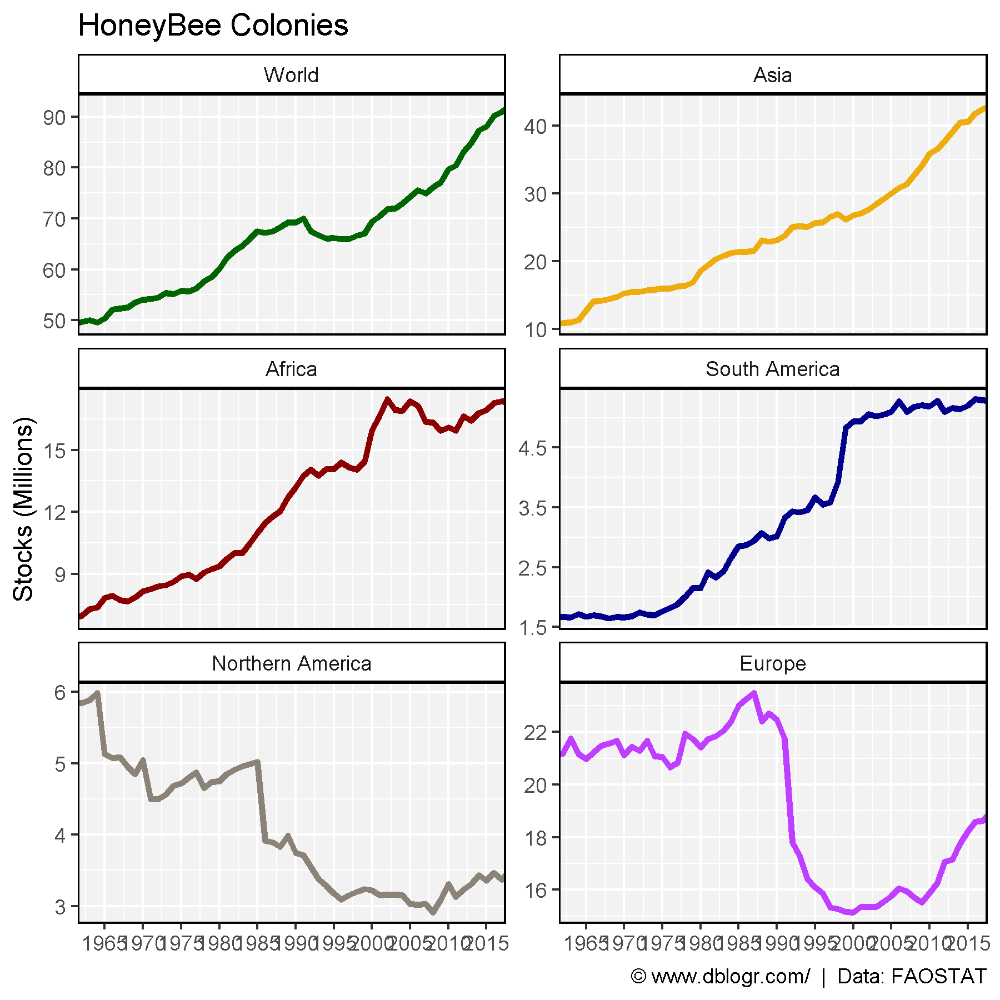
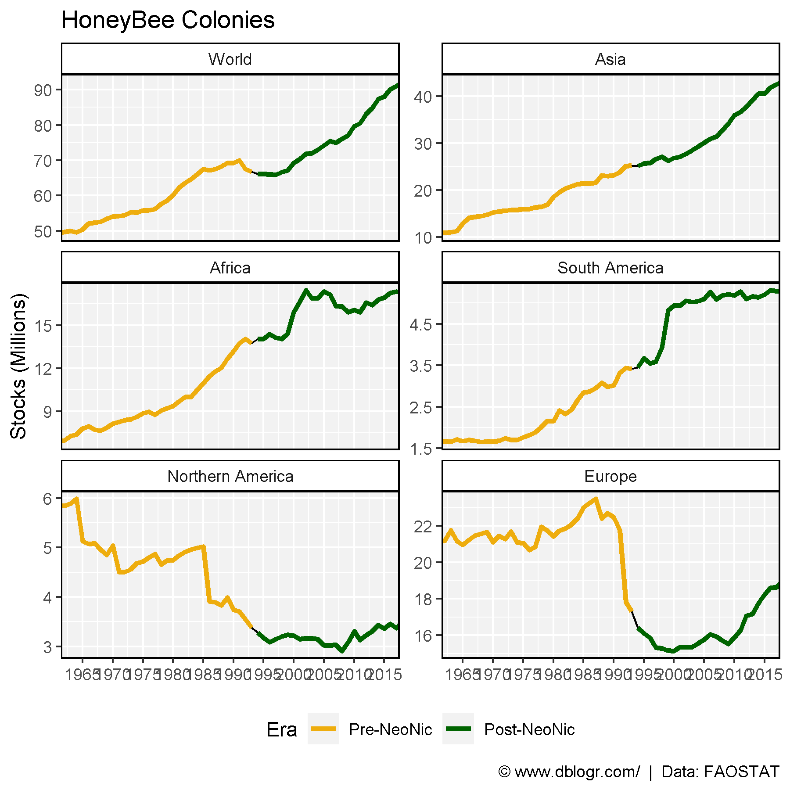
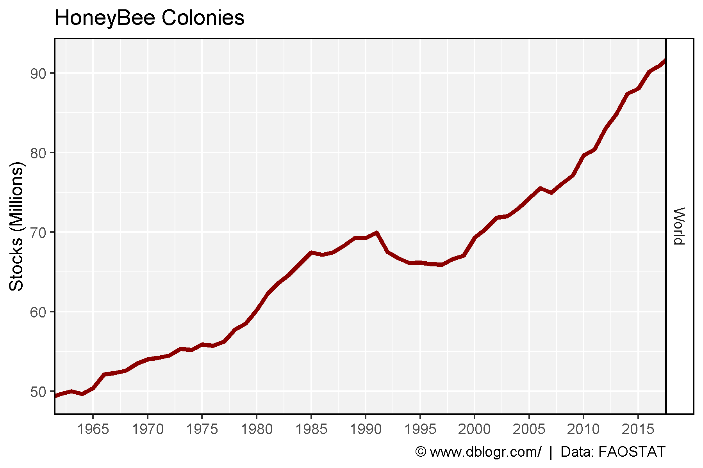

# devtools::install_github("derekmichaelwright/agData")
library(agData) # Loads: tidyverse, ggpubr, ggbeeswarm, ggrepel# Prep data
areas <- c("World", "Asia", "Africa", "South America", "Northern America", "Europe")
xx <- agData_FAO_Livestock %>%
filter(Animal == "Beehives") %>%
mutate(Era = ifelse(Year >= 1994, "Post-NeoNic", "Pre-NeoNic"),
Era = factor(Era, levels = c("Pre-NeoNic", "Post-NeoNic") ) ) %>%
filter(Area %in% areas) %>%
mutate(Area = factor(Area, levels = areas))# Plot
mp <- ggplot(xx, aes(x = Year, y = Value / 1000000)) +
geom_line(aes(color = Area), size = 1.25) +
facet_wrap(Area ~ ., scales = "free_y", ncol = 2) +
theme_agData(legend.position = "none") +
scale_x_continuous(breaks = seq(1960, 2020, by = 5)) +
scale_color_manual(values = agData_Colors) +
coord_cartesian(xlim = c(min(xx$Year)+3, max(xx$Year)-3)) +
labs(title = "HoneyBee Colonies", y = "Stocks (Millions)", x = NULL,
caption = "\xa9 www.dblogr.com/ | Data: FAOSTAT")
ggsave("honeybee_01.png", mp, width = 6, height = 6)
# Plot
mp <- ggplot(xx, aes(x = Year, y = Value / 1000000)) +
geom_line() +
geom_line(aes(color = Era), size = 1.25) +
facet_wrap(Area ~ ., scales = "free_y", ncol = 2) +
theme_agData(legend.position = "bottom") +
scale_color_manual(values = c("darkgoldenrod2", "Dark Green")) +
scale_x_continuous(breaks = seq(1960, 2020, by = 5)) +
coord_cartesian(xlim = c(min(xx$Year)+3, max(xx$Year)-3)) +
labs(title = "HoneyBee Colonies", y = "Stocks (Millions)", x = NULL,
caption = "\xa9 www.dblogr.com/ | Data: FAOSTAT")
ggsave("honeybee_02.png", mp, width = 6, height = 6)
# Prep data
xw <- xx %>% filter(Area == "World")
# Plot
mp <- ggplot(data = xw, aes(x = Year, y = Value / 1000000)) +
geom_line(size = 1.25, color = "darkred") +
facet_grid(Area ~ ., scales = "free_y", labeller = label_wrap_gen(width = 10)) +
scale_x_continuous(breaks = seq(1960, 2020, by = 5)) +
coord_cartesian(xlim = c(min(xx$Year)+3, max(xx$Year)-3)) +
theme_agData() +
labs(title = "HoneyBee Colonies", y = "Stocks (Millions)", x = NULL,
caption = "\xa9 www.dblogr.com/ | Data: FAOSTAT")
ggsave("honeybee_03.png", mp, width = 6, height = 4)